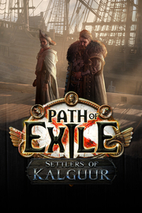

Path of Exile
Detalles
|  | |
| Tiempo de juego | No Jugado |
| Última actividad | Nunca |
| Añadido | 1/29/2025 14:44:06 |
| Modificado | 1/29/2025 14:48:35 |
| Estado de finalización | No Jugado |
| Librería | Playnite |
| Fuente | FREE TO PLAY |
| Plataforma | PC (Windows) |
| Fecha de lanzamiento | 10/23/2013 |
| Puntuación de la Comunidad | 89 |
| Puntuación de la Crítica | 86 |
| Puntuación de usuario | |
| Género | Acción Aventura Free to Play Indie Multijugador masivo Rol |
| Desarrollador | Grinding Gear Games |
| Editor | Grinding Gear Games |
| Característica | Compat. Total Con Mando Compras Dentro De La Aplicación Cooperativo Cooperativo En Línea Cromos De Jcj Jcj En Línea Logros De Multijugador Multijugador Masivo Remote Play En Tableta Un Jugador |
| Enlaces | Punto de encuentro Discusiones Guías Noticias Página de la tienda PCGamingWiki Logros |
| Tag | Acción Aventura Botín Cooperativos en línea Exploración de mazmorras Fantasía Fantasía oscura Free to Play Gestión de inventario Hack and slash Isométricos JcJ MMORPG Multijugador Multijugador masivo Personalización de personajes Rol Rol de acción Terror Un jugador |
Descripción
Eres un exiliado. Tendrás que esforzarte por sobrevivir en el oscuro continente de Wraeclast mientras luchas para conseguir el poder que te permitirá vengarte de quienes te traicionaron. Path of Exile es un RPG de acción en línea creado por jugadores expertos que se desarrolla en un mundo de fantasía oscura. Se centra en el combate de acción visceral, en los objetos poderosos y en una enorme personalización de personajes. Path of Exile es completamente gratis y nunca tendrás que pagar para ganar.
Características principales
- Libertad. Poder. Venganza.
Path of Exile es un RPG de acción en línea diseñado en torno a una sólida economía de objetos y una enorme personalización de personajes.
Path of Exile se desarrolla en el mundo de fantasía oscura de Wraeclast, un mundo marcado por las catástrofes misteriosas del pasado y habitado por criaturas de pesadilla donde el mismísimo entorno desafía a los exiliados que se atreven a explorarlo. Hay siete clases de personajes disponibles para jugar: Duelista, Bruja, Cazadora, Templario, Guerrero, Sombra o Heredera. Explora Wraeclast, desde sus costas olvidadas hasta la ciudad de Oriath, y descubre los antiguos secretos que te aguardan. - Personalización de personajes ilimitada
Crea y personaliza cientos de combinaciones de habilidades únicas gracias a las gemas comerciables y nuestro gigantesco árbol de habilidades pasivas. Combina gemas de habilidad, gemas de asistencia y gemas de activación para crear tu propia y única combinación de poder, defensa y destrucción.
Todas las clases de personajes de Path of Exile comparten el mismo árbol gigantesco de habilidades pasivas. Comenzarás en una de las siete ubicaciones del árbol en función de la clase que hayas elegido y podrás centrarte en las especialidades de tu clase o recorrer el árbol para crear combinaciones complejas de habilidades de diferentes disciplinas. Repartidas por el árbol encontrarás pasivas de piedra angular, maestrías y engarces para joyas que alteran drásticamente la forma de jugar de los personajes.
- Armado hasta los dientes
En Path of Exile todo gira en torno a los objetos. Los frascos son objetos permanentes que tienen modificadores. Las áreas del final del juego son mapas que tienen modificadores que alteran sus desafíos y sus recompensas. Hemos ido tan lejos que hemos eliminado el oro como moneda de cambio, y nuestra economía de comercio se basa en orbes que pueden aleatorizar las propiedades de los objetos. Hemos construido cuidadosamente nuestro sistema de objetos para los veteranos de los mejores RPGs de acción. - Explora el Atlas de mundos
El Atlas de mundos contiene más de cien mapas de niveles altos que ponen a prueba los límites de tu build. A medida que explores el Atlas, irás descubriendo sus oscuros secretos y te enfrentarás a los jefes más peligrosos que Wraeclast ha visto jamás.
Y como no podía ser de otra manera, siguiendo el verdadero espíritu de Path of Exile, el Atlas de mundos tiene su propio árbol de habilidades pasivas. Consigue puntos de habilidad para el árbol completando los mapas del Atlas y crea tu propia experiencia única del final del juego. - Misiones mortales
Durante tu viaje por Wraeclast, conocerás a otros exiliados que te pedirán ayuda. Podrás capturar bestias salvajes para Einhar, adentrarte en las profundidades de la Mina de azurita con Niko, explorar los secretos del Templo de Atzoatl con Alva o investigar un misterioso Sindicato inmortal con Jun. Una vez que desbloquees estas misiones, podrás completarlas cuando quieras en el final del juego. Este contenido opcional de Path of Exile te otorgará recompensas valiosas como objetos monetarios, objetos comerciables poderosos y nuevos métodos de fabricación. - Personaliza tu guarida
En tus largos viajes por los Actos y el Atlas de mundos, descubrirás algunos lugares secretos que están llenos de monstruos peligrosos. Derrótalos, aprópiate de la guarida y diseña tu propio pueblo a tu gusto. Utiliza tu guarida como un lugar tranquilo para comerciar con otros exiliados y fabricar objetos después de los combates, o amplíala y úsala como un salón de hermandad personalizado con cientos de decoraciones.
- Ruthless
Ruthless es un modo de juego opcional que ofrece una forma más difícil de jugar a Path of Exile. Los jugadores de Ruthless se enfrentarán a una escasez de objetos extrema, una fabricación limitada y muchos otros cambios, como que las gemas de asistencia solo caen como botín. Ruthless trata sobre la fricción, la tensión y la expectación. Es mucho más difícil, pero si logras superar su dificultad, tendrás una mayor sensación de satisfacción. En un mundo en el que los objetos están muy por debajo de lo aceptable, cada objeto que encuentres tiene el potencial de ser el que necesitas para mejorar. - Un juego justo. Nunca pagarás para ganar.
Tenemos el compromiso de crear un campo de juego justo para todos los jugadores. Por lo tanto, todas las microtransacciones de Path of Exile son solo cosméticas y no afectan al juego.